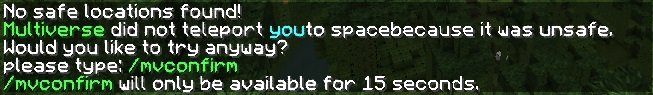
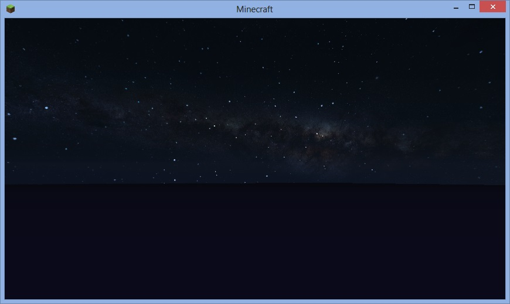

Start up your server again and run Minecraft again and join the server.
First, double tap the space bar to start flying. Multiverse should preserve your flying status across worlds. This way you won't fall to your death as soon as you enter space!
To go to space, type this in your Minecraft game:
/mv tp space
Minecraft is going to complain that there is no "safe location" to go to. That is because the spawn location in the "space" world has no ground on it, so you could fall to your death if you were not flying.
 Go ahead and type /mvconfirm to go to space now! You should appear in a empty space and see nothing but the sky and darkness below!
At this point you can fly around, and if you stop flying you can fall out of the world and die, but that is about it. Because there is nothing to build on, you cannot build anything!
Space, it turns out, is empty, and without matter, you cannot create matter, even if your inventory is full of items. That is where WorldEdit comes into play!
Continue to learn about how to use WorldEdit ->
{kind=link}